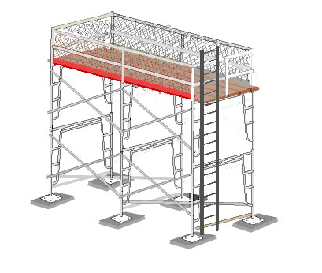
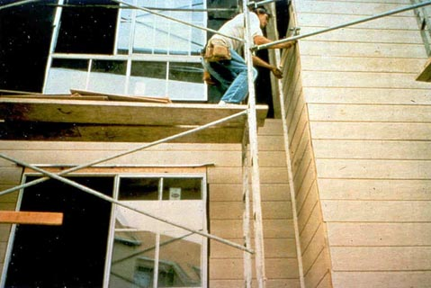

|
|
Except
when used only as a walkway, the platform is the work area of the
scaffold. Therefore, an inspection of a scaffold platform requires safety
checks of both the platform structure and how the platform is used by the
workers.
|
Planking
|
|
-
Each platform must be fully
planked or decked between the front uprights and the guardrail supports, generally
with no gaps greater than 1 inch except where the employer can
demonstrate that a wider space is necessary. In such
cases, the gap will be as small as possible and not exceed 9½
inches. Exception: Platforms used solely as walkways, or during erection or
dismantling, require only the planking that the employer establishes is necessary to
provide safe working conditions (see Figure 1 and Figures
2 and 3). [1926.451(b)(1)(i)
and (ii)]
-
Wooden planking must not be covered
with opaque finishes, except that platform edges may be marked for identification.
Platforms may be coated periodically with wood preservatives, fire retardants, and
slip-resistant finishes, provided they do not obscure the top or bottom wood
surfaces. [1926.451(b)(9)]
-
Scaffold platforms and walkways must be at least 18 inches wide,
unless they are used in areas that the employer can
demonstrate are so narrow that they must be less than 18 inches wide. In such cases,
the platforms
must be as wide as feasible, and fall protection must be
provided. [1926.451(b)(2)(ii)]
-
Nothing that could cause a slip, trip or fall (i.e. tools, scrap
material, chemicals, snow, ice, etc.) is allowed to accumulate on the platform. For
the same reason, cleats or other means of connecting planks must be on the
underside. [1926.451(f)(8)]
-
When moving platforms to the next level, the existing platform must be left
undisturbed until the new end frames have been set in place and braced. [1926.452(c)(1)]

Figure 1. Example of a scaffold that is not fully planked. Planks are not cleated or
otherwise secured against displacement. There is also more
than a 14-inch gap between the building and the scaffold
platform. |
|
|
Overlap
|
|
-
 To prevent slippage, platforms
must
be cleated or otherwise restrained at
each end, or else overlap centerline support at
least 6 inches (Figure 1). [1926.451(b)(4)] To prevent slippage, platforms
must
be cleated or otherwise restrained at
each end, or else overlap centerline support at
least 6 inches (Figure 1). [1926.451(b)(4)]
-
Unless it is designed and
installed to support employees and materials without tipping, or has guardrails that
block employee access, each end of a platform may not extend over its support
more than 12 inches (for platforms 10 feet or shorter
in length) or more than 18 inches
(for platforms more than 10 feet long).
[1926.451(b)(5)]
- On scaffolds where platforms are overlapped to create a long
platform, the overlap may only occur over supports, and may not be less than 12 inches, unless the platforms
are restrained (i.e., nailed together) to prevent movement. [1926.451(b)(7)]
- On scaffolds where platforms
are abutted to create a long platform, each abutted end must rest on a
separate support surface (this does not preclude the use of shared support members
such as "T" sections, hook-on platforms that rest on common supports,
etc.). [1926.451(b)(6)]
- When platforms must overlap because a scaffold changes direction, such as turning a corner, platforms that
rest on a bearer at an angle other
than a right angle shall be laid first, and platforms that rest at right angles over the same
bearer shall be laid second, on top of the first platform. [1926.451(b)(8)]
|
|
Brackets
|
|
-
When brackets are used to support cantilevered platforms, they
must:
-
Be seated with side-brackets parallel to the frames, and
end-brackets at 90 degrees to the frames. [1926.452(c)(5)(i)]
-
Be used only to support personnel, unless the scaffold has been
designed for other loads by a qualified engineer and built to withstand the tipping forces
caused by other loads. [1926.452(c)(5)(iii)]
|
|
Capacity
|
|
-
Scaffold platforms must be able to support
their own weight, plus four times the maximum intended load.
[1926.451(a)(1)]
-
Do not load the scaffold or any
component parts beyond their maximum capacity (their own weight and 4:1 the
maximum intended load). A scaffold can be overloaded by:
-
Too many people being
on the platform.
-
Too much material being stored
on the platform.
-
Point loading, or concentrating
too much of the load in one area (Figures 2 and
3). [1926.451(f)(1)]
 |
 |
| Figures 2
and 3. Planking on this platform should be six planks wide,
instead of only two. Also, note that the planks are bowing because
the bricks are loaded at one point on the platform, instead of
evenly distributed. |
|
|
Falling
Object Protection
|
|
There are two kinds of falling object
hazards associated with scaffolds. One concerns the employees on the scaffold itself, and
the other concerns employees who may work in or enter the area below the scaffold.
-
Each employee on a scaffold
must be protected from falling hand tools, debris, and other small objects, by:
-
Hardhats;
-
Toeboards, screens, or
guardrail systems;
-
Debris nets or canopy
structures that contain or deflect falling objects;
and,
-
Placement of potential
falling objects away from the edge of the surface from which they may
fall when the falling objects are too large, heavy or
massive to be contained or deflected by any of the
above-listed measures.
[1926.451(h)(1)]
-
Where there is a danger of
tools, materials, or equipment falling from a scaffold onto employees below, they
must be protected by:
-
The area below the
scaffold being barricaded so employees are not permitted to enter; or
-
Toeboards being
installed along the edge of platforms more than 10 feet above lower
levels.
-
Where tools, materials,
or equipment are piled to a height higher than the top edge of the
toeboard,
they should be prevented from falling by paneling or screening extending
from the toeboard to the top of the guardrail; or
-
A guardrail system
shall be installed with openings small enough to contain the objects; or
-
A canopy structure,
debris net, or catch platform strong enough to withstand the impact of the
potential falling objects shall be erected over the employees.
[1926.451(h)(2)]
-
When toeboards are used for
falling object protection, they must be:
-
Able to withstand a
force of at least 50 pounds applied in any downward or horizontal direction,
at any point along the toeboard.
-
At least 3½ inches
high from the top edge to the level of the walking/working
surface.
-
Securely fastened in
place at the outermost edge of the platform, and not have more than
¼-inch
clearance above the walking/working surface.
-
Solid, or with openings
not over 1 inch.
[1926.451(h)(4)]
|
| Home | Supported Scaffolds | Suspended
Scaffolds | Other Scaffolds |
| Frequently Asked
Questions | Overview
| Standards | Glossary | User
Guide | Credits |
|